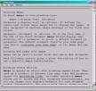
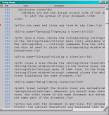

Formatted view (default)
This view is similar to that provided in other graphical browsers. It is a dynamic, direct-manipulation view. At all times it displays the changes you make to the document, in contrast to editors that only provide a series of static snapshots of the document.

Structure view (Views > Show structure[1])
This view shows the actual structure of the document. Each element is represented by its tag name, followed by its attributes on the same line. The elements it contains are represented underneath, next to a blue vertical line that shows the extent of the element.
You can directly edit any text displayed in black by clicking and typing. You must use the editing commands to change text displayed in blue.

Alternate view (Views > Show alternate)
This view shows how the document looks when displayed by a text-only browser. It is useful for checking the accessibility of your documents.

Links view (Views > Show links)
This view shows a list of all anchors in the document and the elements each anchor contains. You can focus on it when working on hypertext links.

Table of Contents view (Views > Show table of contents)
This view shows a list of all headings (Hn elements) in the document. If the document is well structured, it displays an overview of the document.

Source view (Views > Show source)
This view shows the actual source code of the document. You can use it to edit the syntax of your document.